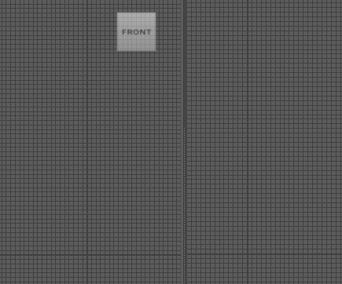
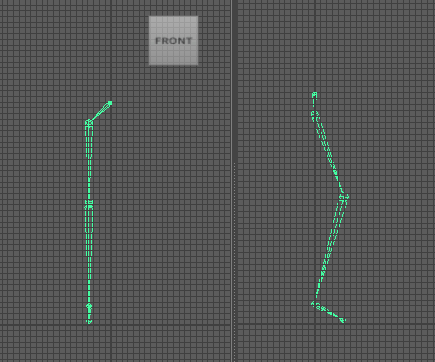
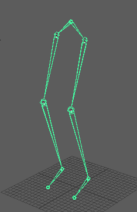

在绘制关节或关节链之前，首先需要用于放置它们的模型。有关创建模型的信息，请参见 NURBS 建模或多边形建模。
设定“关节工具”(Joint Tool)设置
- 在“装备”(Rigging)菜单集（按 F3 键）中，选择“骨架 > 创建关节”(Skeleton > Create Joints) >
 。
。
“关节工具”(Joint Tool)设置面板将显示。
- 根据需要调整“关节工具”(Joint Tool)设置。
创建关节或关节链
- 在“装备”(Rigging)菜单集（按 F3 键）中，选择“骨架”(Skeleton) > “创建关节”(Create Joints)。
- 在视图中，单击要开始关节链的位置。
- 在模型中再次单击要在关节链中放置下一个关节的位置。
将在第一个关节和第二个关节之间出现骨骼。
在此示例中，使用前正交视图和侧正交视图创建关节
提示： 单击鼠标中键并拖动以移动最后放置的关节。 - 继续在视图中单击，直到创建完关节链中的所有关节。
- 按 Enter 键完成关节链。
- 可选：选择连接到中心关节的关节，然后复制它们 (Ctrl + D) 以创建第二个肢体。

在此示例中，会复制关节并将其拖动到第一个链的旁边

透视视图中的结果：一对腿
创建在模型中自动居中的关节或关节链
- 单击“状态行”(Status Line)上的“捕捉到投影中心”(Snap to Projected Center)图标
 ，启用居中模式。
，启用居中模式。
- 在“装备”(Rigging)菜单集（按 F3 键）中，选择“骨架”(Skeleton) > “创建关节”(Create Joints)。
- 在视图中，单击模型上要创建关节的位置。
关节自动在模型中居中。注： 如果模型具有多个网格层，则居中模式将最小化置换，并会将关节放置在层的中心。
- 如果需要，请使用“移动工具”(Move Tool)重新定位关节。
关节在其新位置中动态居中。
- 在模型上再次单击要创建关节链中的下一个关节的位置。
骨骼显示在第一个关节和第二个关节之间，第二个关节也是居中显示在模型中。
- 继续在视图中单击，直到创建完关节链中的所有关节。
- 按 Enter 键完成关节链。